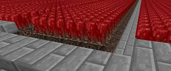

March 21, 2025
"If you're not farming Nether Wart, you're leaving millions of coins on the table."
Skyblock players are always searching for the most profitable money-making method. As of 2025, Nether Wart farming remains the best way to generate massive amounts of coins.
Why Nether Wart?
Nether Wart is valuable because it sells for high prices at NPC shops and on the Bazaar. The crop does not require replanting, making it easy to harvest continuously.
2021
Farming update makes Nether Wart highly profitable
2023
New hoe enchantments increase profits
2025
Nether Wart remains the top money-making method
"Maximize profits by using the best farming tools and upgrades."